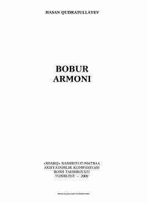

BAZahiriddin Muhammad Boburning hayoti va armonli taqdiri haqida tarixiy-adabiy asar.
Ushbu kitobda Zahiriddin Muhammad Boburning hayot yo'li, ijodiy merosi va uning amalga oshmagan orzu-armonlari tarixiy hamda adabiy nuqtayi nazardan tahlil qilinadi. Muallif XV-XVI asrlar madaniy muhitini yoritib, Bobur shaxsiyatining murakkab qirralarini ochib beradi.